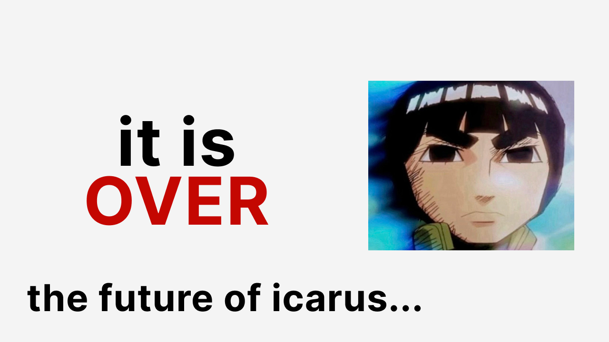
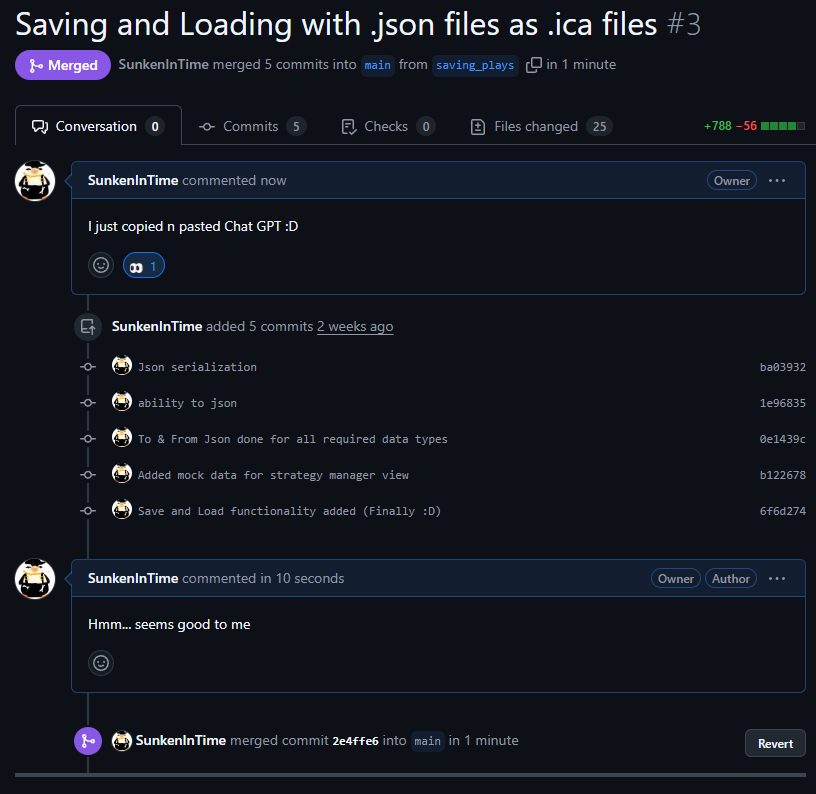
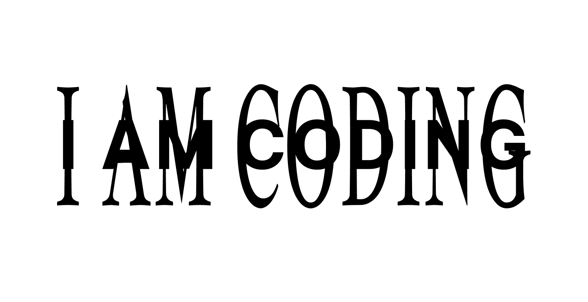
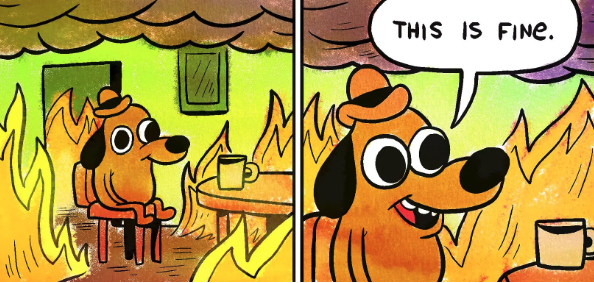

Icarus: Flying Too Close to the Sun (and Loving Every Minute)
The story of building an open-source Valorant strategy tool, one mental breakdown at a time...

The story of building an open-source Valorant strategy tool, one mental breakdown at a time...

Please always make sure food is good before you eat it...

Where you finally use what you learnt in Pre-calc, and SVGs continue to haunt my dreams...

When your rank won't climb, but at least your SVGs will scale...
